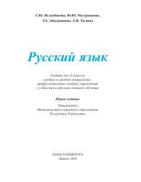

RT11-sinf o'quvchilari uchun rus tili fanidan rasmiy darslik.
Ushbu darslik O'zbekiston Respublikasi umumiy o'rta ta'lim maktablarining 11-sinf o'quvchilari uchun mo'ljallangan. Kitob rus tilini kommunikativ asosda o'rgatishga qaratilgan bo'lib, grammatika, leksika va nutq madaniyatini rivojlantirish bo'yicha mashqlarni o'z ichiga oladi.